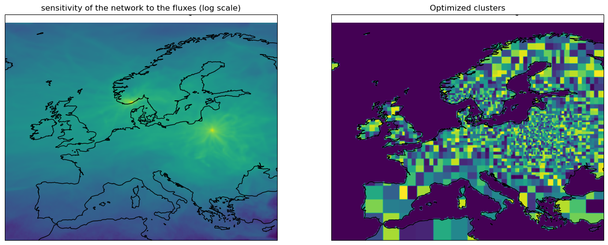

Step-by-step inversion tutorial
This tutorial shows how to run a simple CO2 inversion, using example data (download from the ICOS Carbon Portal). This assumes that:
- LUMIA has been installed
- The example observation file (obs_example.tgz) and configuration file (inversion.yaml) are present in the current folder
- Footprint files are present on disk, in the ./footprints folder
- Pre-processed emission files are present in the ./data/fluxes/eurocom025x025/1h folder
If the data is in a different place, edit the config file (inversion.yaml).
The step-by-step procedure described below is the equivalent of just running lumia optim --rc inversion.yaml.
Import modules
# Modules required by the inversion
from lumia import ui # user-interface (higher-level methods)
from lumia.config import RcFile # Config files
from lumia.formatters import xr # emission files
from lumia.interfaces.multitracer import Interface # Interface betwen the model state (gridded fluxes) and the optimization (state vector)
import lumia
# Modules required for display purpose in this notebook:
from IPython.display import display
from matplotlib.pyplot import subplots
import cartopy
from numpy import log
from numpy.random import randintLoad the configuration file
Detailed description of the config file can be found in the Settings section.
rcf = RcFile('inversion.yaml')Load the observations file.
The observation file contains two pandas dataframes:
- the observations DataFrame contains the observation themselves. Mandatory columns are time, site, height, obs, err_obs, mix_background, code and tracer:
- the sites DataFrame contains the information that is common to all obs of one site (lat, lon, alt, site name and site code). There not really any mandatory column ...
In the observations table, the site column contains indices of the sites table (leftermost column in the output below), while the code column contains the site codes (they are similar in this instance, but site could be anything).
height is the sampling height (above ground), while alt is the ground altitude (above sea level) at the sites.
err_obs is the measurement uncertainty. Use a value below 0 if unavailable.
obs = ui.load_observations(rcf)
display(obs.observations)
display(obs.sites)2023-01-04 16:55:51.852 | INFO | lumia.obsdb:load_tar:169 - 71907 observation read from obs_example.tgz| time | site | height | obs | err_obs | mix_background | code | tracer | |
|---|---|---|---|---|---|---|---|---|
| 0 | 2018-01-03 23:00:00 | ssl | 12.0 | 411.95 | -9.990 | 410.626136 | ssl | co2 |
| 1 | 2018-01-04 00:00:00 | ssl | 12.0 | 412.03 | -9.990 | 410.596810 | ssl | co2 |
| 2 | 2018-01-04 01:00:00 | ssl | 12.0 | 412.04 | -9.990 | 410.560833 | ssl | co2 |
| 3 | 2018-01-04 02:00:00 | ssl | 12.0 | 411.59 | -9.990 | 410.515688 | ssl | co2 |
| 4 | 2018-01-04 03:00:00 | ssl | 12.0 | 411.73 | -9.990 | 410.463696 | ssl | co2 |
| ... | ... | ... | ... | ... | ... | ... | ... | ... |
| 71902 | 2018-08-28 12:00:00 | gic | 20.0 | 402.39 | 0.222 | 402.745598 | gic | co2 |
| 71903 | 2018-08-28 13:00:00 | gic | 20.0 | 402.42 | 0.285 | 402.983801 | gic | co2 |
| 71904 | 2018-08-28 14:00:00 | gic | 20.0 | 402.61 | 0.438 | 403.182289 | gic | co2 |
| 71905 | 2018-08-28 15:00:00 | gic | 20.0 | 403.19 | 0.248 | 403.303281 | gic | co2 |
| 71906 | 2018-08-29 11:00:00 | gic | 20.0 | 402.07 | 0.366 | 403.370067 | gic | co2 |
71907 rows × 8 columns
| name | lat | lon | alt | code | |
|---|---|---|---|---|---|
| bik | Bialystok | 53.231998 | 23.027000 | 183.0 | bik |
| bir | Birkenes Observatory | 58.388600 | 8.251900 | 219.0 | bir |
| bis | Biscarrosse | 44.378100 | -1.231100 | 73.0 | bis |
| brm | Beromunster | 47.189600 | 8.175500 | 797.0 | brm |
| bsd | Bilsdale | 54.359000 | -1.150000 | 380.0 | bsd |
| ces | Cabauw | 51.971000 | 4.927000 | -1.0 | ces |
| cmn | Monte Cimone | 44.166668 | 10.683333 | 2165.0 | cmn |
| crp | Carnsore Point | 52.180000 | -6.370000 | 9.0 | crp |
| dec | Delta de l'Ebre | 40.743900 | 0.786700 | 1.0 | dec |
| eec | El Estrecho | 36.058600 | -5.664000 | 20.0 | eec |
| ers | Ersa | 42.969200 | 9.380100 | 533.0 | ers |
| fkl | Finokalia | 35.337800 | 25.669400 | 150.0 | fkl |
| gat | Gartow | 53.065700 | 11.442900 | 70.0 | gat |
| gic | Sierra de Gredos | 40.345700 | -5.175500 | 1436.0 | gic |
| hei | Heidelberg | 49.417000 | 8.674000 | 116.0 | hei |
| hpb | Hohenpeissenberg | 47.801100 | 11.024600 | 934.0 | hpb |
| htm | Hyltemossa | 56.097600 | 13.418900 | 115.0 | htm |
| hun | Hegyhatsal | 46.950000 | 16.650000 | 248.0 | hun |
| ipr | Ispra | 45.814700 | 8.636000 | 210.0 | ipr |
| jfj | Jungfraujoch | 46.550000 | 7.987000 | 3570.0 | jfj |
| kas | Kasprowy Wierch, High Tatra | 49.232500 | 19.981800 | 1989.0 | kas |
| kre | Křešín u Pacova | 49.572000 | 15.080000 | 534.0 | kre |
| lhw | Laegern-Hochwacht | 47.482200 | 8.397300 | 840.0 | lhw |
| lin | Lindenberg | 52.166300 | 14.122600 | 73.0 | lin |
| lmp | Lampedusa | 35.530000 | 12.520000 | 45.0 | lmp |
| lmu | La Muela | 41.594100 | -1.100300 | 571.0 | lmu |
| lut | Lutjewad | 53.403600 | 6.352800 | 1.0 | lut |
| mhd | Mace Head | 53.326100 | -9.903600 | 5.0 | mhd |
| mlh | Malin Head | 55.355000 | -7.333000 | 22.0 | mlh |
| nor | Norunda | 60.086400 | 17.479400 | 46.0 | nor |
| ohp | Observatoire de Haute Provence | 43.931000 | 5.712000 | 650.0 | ohp |
| ope | Observatoire pérenne de l'environnement | 48.561900 | 5.503600 | 390.0 | ope |
| pal | Pallas-Sammaltunturi, GAW Station | 67.973300 | 24.115700 | 565.0 | pal |
| pdm | Pic du Midi | 42.937200 | 0.141100 | 2877.0 | pdm |
| prs | Plateau Rosa Station | 45.930000 | 7.700000 | 3480.0 | prs |
| pui | Puijo | 62.909600 | 27.654900 | 232.0 | pui |
| puy | Puy de Dôme | 45.771900 | 2.965800 | 1465.0 | puy |
| rgl | Ridge Hill | 51.997600 | -2.540000 | 204.0 | rgl |
| sac | Saclay | 48.722700 | 2.142000 | 160.0 | sac |
| smr | Hyytiälä | 61.847400 | 24.294700 | 181.0 | smr |
| ssl | Schauinsland, Baden-Wuerttemberg | 47.920000 | 7.920000 | 1205.0 | ssl |
| svb | Svartberget | 64.256000 | 19.775000 | 235.0 | svb |
| tac | Tacolneston | 52.517700 | 1.138600 | 56.0 | tac |
| trn | Trainou | 47.964700 | 2.112500 | 131.0 | trn |
| uto | Utö - Baltic sea | 59.783900 | 21.367200 | 8.0 | uto |
| wao | Weybourne, Norfolk | 52.950200 | 1.121900 | 20.0 | wao |
Construct the emission file
LUMIA requires all the emissions to be in a netCDF4 file, covering the entire inversion period. The file can be generated from pre-processed annual, category-specific emission files.
The emission file for the simulation is constructed based on keys in the emissions section of the configuration file:
- in our case, there is a single co2 tracer
- the pre-processed emission files start with the prefix "flux_co2." (
emissions.co2.prefixkey) - there are two categories under the
emissions.co2.categoriessection:fossil(EDGARv4.3_BP2019)biosphere(VPRM)
- fluxes are hourly (
emissions.co2.interval) and in the path given byemissions.co2.path
Therefore, lumia will take biosphere fluxes from the flux_co2.VPRM.%Y.nc files, and fossil emissions from the flux_co2.EDGARv4.3_BP2019.%Y.nc files. The fluxes will be located in the folder ${emissions.co2.path}/${emissions.co2.interval} (i.e. data/fluxes/nc/eurocom025x025/1h).
The emissions can be constructed using the ui.prepare_emis method. Check that the values it prints are realistic!
emis = ui.prepare_emis(rcf)2023-01-03 21:52:19.670 | INFO | lumia.formatters.xr:print_summary:287 - ===============================
2023-01-03 21:52:19.681 | INFO | lumia.formatters.xr:print_summary:288 - fossil:
2023-01-03 21:52:19.686 | INFO | lumia.formatters.xr:print_summary:290 - 2018:
2023-01-03 21:52:19.692 | INFO | lumia.formatters.xr:print_summary:293 - January: 0.15 petagC
2023-01-03 21:52:19.694 | INFO | lumia.formatters.xr:print_summary:293 - February: 0.13 petagC
2023-01-03 21:52:19.696 | INFO | lumia.formatters.xr:print_summary:293 - March: 0.14 petagC
2023-01-03 21:52:19.698 | INFO | lumia.formatters.xr:print_summary:293 - April: 0.12 petagC
2023-01-03 21:52:19.699 | INFO | lumia.formatters.xr:print_summary:293 - May: 0.12 petagC
2023-01-03 21:52:19.700 | INFO | lumia.formatters.xr:print_summary:293 - June: 0.10 petagC
2023-01-03 21:52:19.701 | INFO | lumia.formatters.xr:print_summary:293 - July: 0.10 petagC
2023-01-03 21:52:19.704 | INFO | lumia.formatters.xr:print_summary:293 - August: 0.11 petagC
2023-01-03 21:52:19.705 | INFO | lumia.formatters.xr:print_summary:293 - September: 0.11 petagC
2023-01-03 21:52:19.706 | INFO | lumia.formatters.xr:print_summary:293 - October: 0.13 petagC
2023-01-03 21:52:19.708 | INFO | lumia.formatters.xr:print_summary:293 - November: 0.13 petagC
2023-01-03 21:52:19.710 | INFO | lumia.formatters.xr:print_summary:293 - December: 0.14 petagC
2023-01-03 21:52:19.711 | INFO | lumia.formatters.xr:print_summary:294 - --------------------------
2023-01-03 21:52:19.711 | INFO | lumia.formatters.xr:print_summary:295 - Total : 1.48 petagC
2023-01-03 21:52:20.535 | INFO | lumia.formatters.xr:print_summary:287 - ===============================
2023-01-03 21:52:20.537 | INFO | lumia.formatters.xr:print_summary:288 - biosphere:
2023-01-03 21:52:20.539 | INFO | lumia.formatters.xr:print_summary:290 - 2018:
2023-01-03 21:52:20.541 | INFO | lumia.formatters.xr:print_summary:293 - January: 0.12 petagC
2023-01-03 21:52:20.542 | INFO | lumia.formatters.xr:print_summary:293 - February: 0.09 petagC
2023-01-03 21:52:20.543 | INFO | lumia.formatters.xr:print_summary:293 - March: 0.07 petagC
2023-01-03 21:52:20.545 | INFO | lumia.formatters.xr:print_summary:293 - April: -0.18 petagC
2023-01-03 21:52:20.547 | INFO | lumia.formatters.xr:print_summary:293 - May: -0.61 petagC
2023-01-03 21:52:20.548 | INFO | lumia.formatters.xr:print_summary:293 - June: -0.60 petagC
2023-01-03 21:52:20.550 | INFO | lumia.formatters.xr:print_summary:293 - July: -0.45 petagC
2023-01-03 21:52:20.551 | INFO | lumia.formatters.xr:print_summary:293 - August: -0.23 petagC
2023-01-03 21:52:20.553 | INFO | lumia.formatters.xr:print_summary:293 - September: -0.03 petagC
2023-01-03 21:52:20.554 | INFO | lumia.formatters.xr:print_summary:293 - October: 0.11 petagC
2023-01-03 21:52:20.556 | INFO | lumia.formatters.xr:print_summary:293 - November: 0.12 petagC
2023-01-03 21:52:20.557 | INFO | lumia.formatters.xr:print_summary:293 - December: 0.11 petagC
2023-01-03 21:52:20.558 | INFO | lumia.formatters.xr:print_summary:294 - --------------------------
2023-01-03 21:52:20.559 | INFO | lumia.formatters.xr:print_summary:295 - Total : -1.49 petagCSetup the transport model
The lumia.transport class handles the communication between lumia and the (pseudo-) transport model.
The "formatter" is a module containing a WriteStruct and a ReadStruct functions, whose task is to write/read data drivers data for the transport model (and output data of its adjoint).
model = lumia.transport(rcf, obs=obs, formatter=xr)Setup the observation uncertainties.
In this example, we use the dyn approach. The obs uncertainty (which accounts for model error) is estimated based on the quality of the fit to the short-term observed variability. This works the following way:
1. A forward model run is performed, with prior emissions
2. long-term variability (> 7 days) is removed from both the modelled and the observed concentrations (this is done by subtracting their 7-days moving average)
3. the obs uncertainty is the standard deviation of the fit of the modelled detrended concentrations to the observed ones. The rationale is that, since the inversion only optimize emissions at a weekly interval (in this example), shorter variability cannot be improved and is therefore necessarily a feature of the model uncertainty.
Note that this technique requires performing a forward model run. Other approaches are implemented but haven't necessarily been updated to the yaml config file, so adjustments in the code might be needed (in the obsdb/InversionDb.py file)
model = ui.setup_uncertainties(model, emis)The plots below illustrate the calculation and comparison of short-term variability at one example site:
dbs = model.db['bik']
f, ax = subplots(2, 1, figsize=(16, 8))
ax[0].plot(dbs.time, dbs.obs, 'k.', label='obs', ms=1)
ax[0].plot(dbs.time, dbs.obs_detrended, 'k-', label='obs detrended')
ax[0].plot(dbs.time, dbs.mix_apri, 'r.', label='apri', ms=1)
ax[0].plot(dbs.time, dbs.mod_detrended, 'r-', label='apri detrended')
ax[0].grid()
ax[0].legend()
ax[0].set_title('concentrations at Byalistok')
ax[1].plot(dbs.time, dbs.resid_obs, 'k-', label='short term variability obs')
ax[1].plot(dbs.time, dbs.resid_mod, 'r-', label='short term variability model')
ax[1].grid()
ax[1].legend()
sig = (dbs.resid_mod - dbs.resid_obs).std()
ax[1].set_title(f'Short-term variability of the concentration at Byalistok (sigma = {sig:.2f} ppm)')Text(0.5, 1.0, 'Short-term variability of the concentration at Byalistok (sigma = 3.99 ppm)')
Definition of the state vector
The inversion adjusts 2500 pixels or cluster of pixels every week (or whatever values set by the optimize.emissions.co2.*.npoints and optimize.emissions.co2.*.optimization_interval keys).
The grouping of pixels in clusters is based on the sensitivity of the observation network to the emissions: pixels not well monitored by the observation network will tend to be grouped together, while pixels directly upwind of the measurement stations will be optimized independently. This clustering is calculated dynamically, based on an initial adjoint run:
sensi = model.calcSensitivityMap(emis)Below the Interface is the module that handles the transitions between optimization space (state vector, 2500 x n_weeks points x n_tracers x n_cat) and the model space (gridded fluxes).
control = Interface(model.rcf, model_data=emis, sensi_map=sensi)The plots below illustrate the calculated sensitivity of the observation network to the surface fluxes (left panel), and the resulting clustering of emissions (right panel, the colors are random). Note that there are only footprints for two sites in the example data used to generate this notebook. In a more realistic case, the maps would look somewhat different ...
f, ax = subplots(1, 2, figsize=(16, 8), subplot_kw=dict(projection=cartopy.crs.PlateCarree(), extent=rcf['run']['grid'].extent))
ax[0].coastlines()
ax[0].imshow(log(sensi['co2']), extent=rcf['run']['grid'].extent, origin='lower')
ax[0].set_title("sensitivity of the network to the fluxes (log scale)")
smap = control.model_data.co2.spatial_mapping['biosphere'].values.copy()
for ii in range(smap.shape[1]):
smap[smap[:, ii] != 0, ii] = randint(0, 1000)
ax[1].imshow(smap.sum(1).reshape((160, 200)), origin='lower', extent=rcf['run']['grid'].extent)
ax[1].coastlines()
ax[1].set_title('Optimized clusters')Text(0.5, 1.0, 'Optimized clusters')
Run the inversion
The prior error-covariance matrix will be calculated when initializing the optimizer (first line below).
opt = lumia.optimizer.Optimizer(model.rcf, model, control)
opt.Var4D()